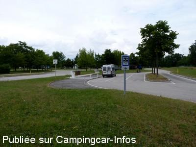

AA = Aire de services sur autoroute de :
A49 Valence=>Grenoble ROYANS VERCORS
(N° 37)
Accès/adresse :
Entre les sorties Baume d'Hostun et Saint-Marcellin.
Latitude : (Nord) 45.07153° Décimaux ou 45° 4′ 17′′
Longitude : (Est) 5.2122° Décimaux ou 5° 12′ 43′′
Tarif : Gratuit
Services :


Station-services
Autres informations :
Emplacements délimités au sol.
Le 15/06/2010 par Xtian74

Le 15/06/2010 par Xtian74
de
Xtian74
le 14/06/2010 :
Coordonnées contrôlées et rectifiées. Trois longs emplacements sont délimités au sol de part et d'autre de la borne de services, il serait donc possible d'y passser la nuit, l'autoroute étant assez éloignée.
Coordonnées contrôlées et rectifiées. Trois longs emplacements sont délimités au sol de part et d'autre de la borne de services, il serait donc possible d'y passser la nuit, l'autoroute étant assez éloignée.